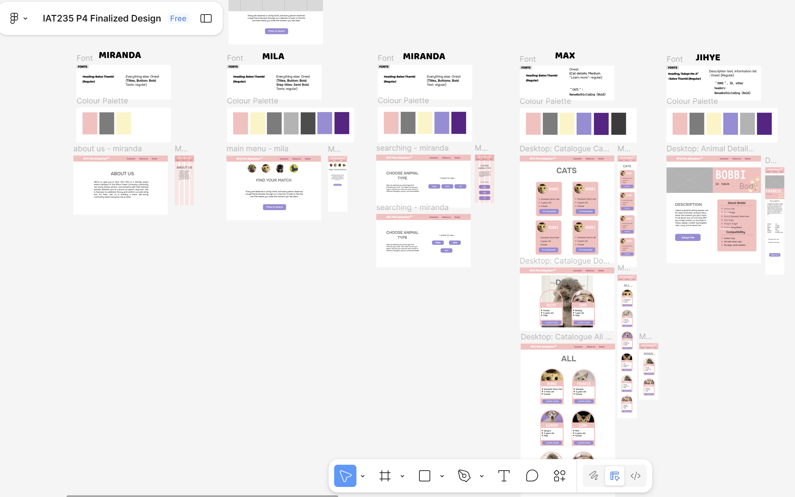

Text Elements
Headings
CSS selector:
h1, h2, h3, h4, p
Sample code:
<h1>Heading Level 1</h1>
<h2>Heading Level 2</h2>
<h3>Heading Level 3</h3>
<h4>Heading Level 4</h4>
<p>Paragraph</p>
Rendered element:
H1: Styrene B Trial 100px (Bold)
H2: Styrene B Trial 60px (Regular)
H3: Styrene B Trial 50px (Regular)
H4: GT America Mono Trial 20px (Md)
P: Styrene B Trial 22px (Regular)
Combined Elements
Process Analysis for Pet Adoption Website Project
Project 04, Pet Adoption Website, is a project I participated in as the final project for the
IAT 235 course. I worked with team members Mila, Max, and Miranda. I was responsible for complementing
the webpage designs by maintaining consistency with the wireframes, as well as building the main
navigation pages using HTML and CSS. We actively used GitHub throughout the process to track each
other’s work, since all four of us were working both collaboratively and individually at the same time.
The stages of work included:
- Webpage design ideation
- Refining the design and integrating UI/UX concepts from IAT 201
- Creating the initial structure of the website as a team
- Each group member completing a specific webpage
One of the main challenges we encountered was that our approaches to User Interaction and User Experience
were often influenced by our individual perspectives. We addressed this by openly sharing our ideas,
researching evidence to support design decisions, and expanding our understanding by considering multiple
types of users.
Through this project, I learned how to effectively collaborate with others to construct a cohesive website.
I improved my ability to communicate with team members who had different design perspectives, and to
support design decisions with evidence-based reasoning.
I would present each step of this process to different audiences by clearly summarizing the goals,
challenges, and outcomes of each stage. This would be supported with relevant visual examples that demonstrate
how each step contributed to the overall project.

Bio
I am interested in designing user-centered digital products by analyzing user experience data
and applying insights to improve both existing and new systems. My approach is evidence-focused,
combining UI/UX analysis with visual and graphic design to create meaningful, functional,
and aesthetically pleasing solutions. I am particularly drawn to projects that challenge me to
blend creativity with analytical reasoning, allowing me to explore design processes deeply and
refine interfaces based on real user insights.
I aim to work for companies that value innovative and effective design solutions—whether
in digital products, websites, or visual content—and that foster a collaborative, communicative
environment where ideas can thrive. Through my portfolio, I showcase my design personality,
demonstrating a learning journey supported by strong design principles, attention to detail, and
a commitment to improving user experiences. I am motivated by opportunities to contribute as a
product designer, UI/UX analyst, content designer, or graphic designer, where I can combine
analytical thinking with creative problem-solving to produce impactful designs.